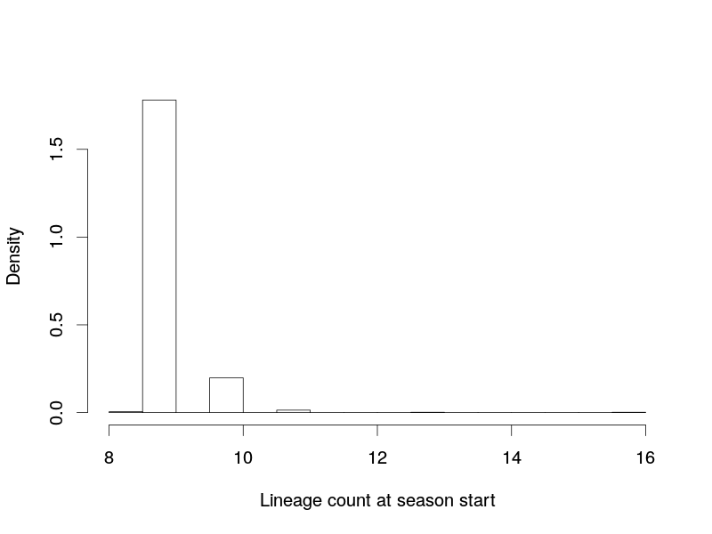
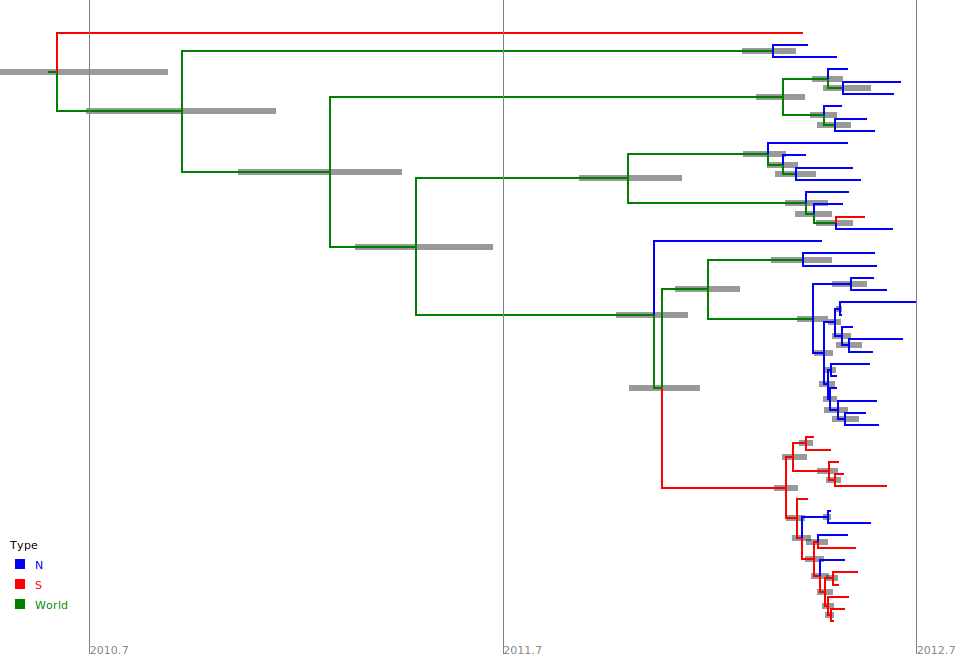

Achoo!
Exploring the Phylodynamics of seasonal influenza in NZ
Phylodynamics
- Term introduced by Grenfell et al. (Science, 2004)
- Refers to the interplay between "immunodynamics, epidemiology and evolutionary biology", and the effect this has on the shape of pathogen phylogenies.

Influenza
- Influenza is an RNA virus and mutates very rapidly.
- Epidemics occur every season (Winter) in NZ.
- Repeatability: Great system for studying epidemiology!
SHIVERS
- Southern Hemisphere Influenza and Vaccine Effectiveness, Research and Surveillance
- Approximately 150 H3N2 genomes sampled over 3 seasons from among the 20 New Zealand district health boards (DHBs)
- This is a pilot data set - we help determine which data to collect next!
Questions
- Can the seasonal prevalence dynamics be explained by a compartmental model?
- How does population structure influence these dynamics?
- Is there evidence for multiple introductions during a season?
Inferring prevalence curves
The SIR model
- Susceptible-Infectious-Removed
- Described graphically as a Stochastic Petri Network:


Relationship between SIR model and genetic data
- The SIR model + sampling process generates an epidemic trajectory $C$ including sampling events.
- The generates a sampled transmission tree $T$.
- Influenza genes evolve down this tree to produce an alignment $A$.
\[ P(T,C|A) \propto P(A|T) P(T|C) P(C|\theta) P(\theta) \]
How do we sample the $(T,C)$ state space?
SIR prevalence from SHIVERS data
- Analyze all 3 years of sequence data simultaneously.
- Assume unlinked trees with distinct SIR epidemics conditional on a shared set of model parameters.
Phylogeography of seasonal epidemics
Potential for phylogeographic analyses
- Each SHIVERS genome tagged with location down to DHB-level.
- Have three distinct phylogeographic models on hand:
- "mugration" model of Lemey et al.
- Structured coalescent model of Hudson and Notohara.
- BDMM of Kuhnert et al. (in press)
- None of these are explicitly consider epidemiological models: to do!
Mugration results
Mugration results (North/South)
SC results (North/South)
Detecting multiple introductions
Qualitative evidence
Semi-quantitative evidence
North/South/World model
Vast numbers of introductions?
Where to now?
- Improve SIR analyses using a more realistic sampling model.
- Use hierarchical priors and incorporate human movement data to improve SC analyses.
- Determine the cause of the overestimates of introduction count.
- ... any others? This is a very rich set of data!